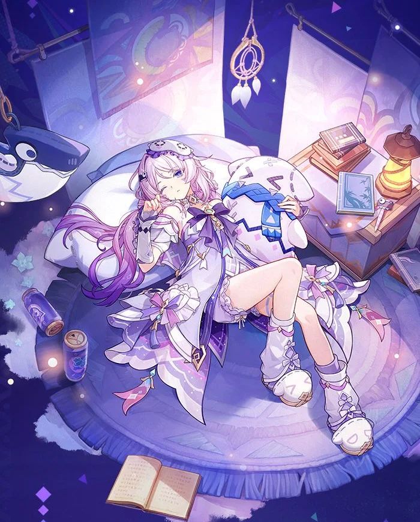
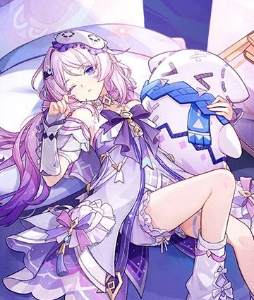

站点在线 · 2026 / 07
你好，我是 络莉
这里记录真实的 LXT。
一个喜欢写代码、玩游戏，也在认真收集生活微光的人。虚拟形象负责讲故事，真实的我负责把事情做完。
03正在做的项目
24本年度学习记录
∞还想探索的世界

virtual host · dream archive络莉 / LXTWhere quiet nights become stories
01
心有所爱，
眼里有光，
脚下有路。
ABOUT / 01
虚拟形象之外，
这里是真实的我。

我把络莉当作这个网站的站长，也把这里当作一个不会被算法催促的个人空间。写下正在学的东西，放进完成过的作品，偶尔分享一场游戏或一首歌。
目前在学习 / 开发 / 记录之间保持平衡。
称呼LXT · kexin
位置追逐梦想的路上
方向前端开发 / 数字创作
关键词代码、游戏、二次元、夜晚
“把复杂的事情做得清楚，把喜欢的事坚持久一点。”— LXT 的工作准则
INTERESTS / 02
我把时间花在
这些值得的事上。
不追求把兴趣变成标签，只记录它们如何让每一天变得更具体。
SELECTED WORK / 03
正在做的
小而具体的事。
WEB / 个人站点
夜樱记录室
将个人资料、兴趣和项目放进一个轻盈、可持续更新的静态站点。
STUDY / 学习记录
前端实践手册
把 Vue 与 TypeScript 的学习路径整理成可复用的笔记和小实验。
TOOL / 小工具
生活的整理术
为自己的阅读、游戏和灵感建立一个简单可靠的记录方式。
LATEST NOTES / 04
最近在记录
什么。
STAY IN TOUCH / 05
如果你也喜欢
认真做点什么。
欢迎在公开平台找到我。合作、交流，或者只是交换一份游戏名单，都可以。
GitHub 主页链接待补充Bilibili 主页链接待补充